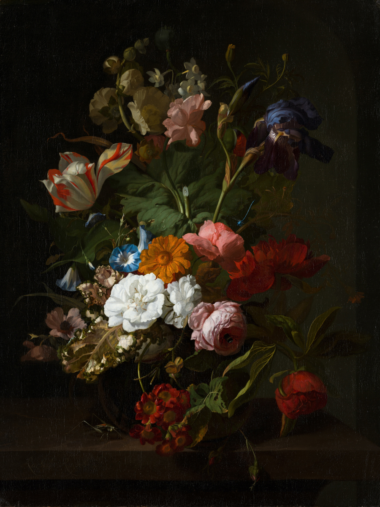

Jessie Cullen
Fine art curator, living + working in Berlin, Germany

Vase with Flowers. Circa 1700. Institution: Mauritshuis
Cat with kittens. Date: 1844. Institution: Rijksmuseum
Still Life with Flowers and Fruit. Date: 1728. Institution: Rijksmuseum